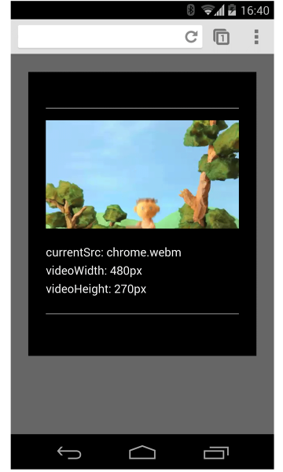

Video
Customize the video player
Different platforms display video differently. Mobile solutions need to consider device orientation. Use Fullscreen API to control the fullscreen view of video content.
Different platforms display video differently. Mobile solutions need to consider device orientation. Use Fullscreen API to control the fullscreen view of video content.
Different platforms display video differently. Mobile solutions need to consider device orientation. Use Fullscreen API to control the fullscreen view of video content.
Device orientation isn’t an issue for desktop monitors or laptops, but is hugely important when considering web page design for mobile and tablets.
Safari on iPhone does a good job of switching between portrait and landscape orientation:
Device orientation on an iPad and Chrome on Android can be problematic. For example, without any customization a video playing on an iPad in landscape orientation looks like this:

Setting the video width: 100% or max-width: 100% with CSS can resolve
many device orientation layout problems. You may also want to consider
fullscreen alternatives.
Different platforms display video differently. Safari on an iPhone displays a video element inline on a web page, but plays video back in fullscreen mode:

On Android, users can request request fullscreen mode by clicking the fullscreen icon. But the default is to play video inline:

Safari on an iPad plays video inline:
For platforms that do not force fullscreen video playback, the Fullscreen API is widely supported. Use this API to control fullscreening of content, or the page.
To full screen an element, like a video:
elem.requestFullScreen();To full screen the entire document:
document.body.requestFullScreen();You can also listen for fullscreen state changes:
video.addEventListener("fullscreenchange", handler);Or, check to see if the element is currently in fullscreen mode:
console.log("In full screen mode: ", video.displayingFullscreen);You can also use the CSS :fullscreen pseudo-class to change the way
elements are displayed in fullscreen mode.
On devices that support the Fullscreen API, consider using thumbnail images as placeholders for video:
To see this in action, check out the demo.
NOTE: requestFullScreen() is currently vendor prefixed and may require
extra code for full cross browser compatibility.
Updated on 2014-04-29
Except as otherwise noted, the content of this page is licensed under the Creative Commons Attribution 3.0 License, and code samples are licensed under the Apache 2.0 License. For details, see our Site Policies.